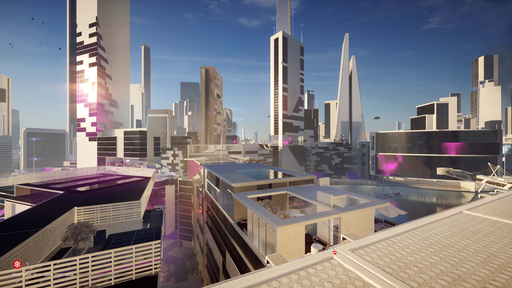
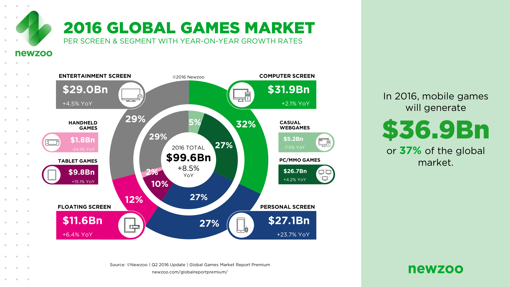

Why Mirror's Edge Catalyst FAILS
-
It has been 8 years since ME was launched. Now here we are, ME:C. It is a really really long time for a game, because of long time, you can not know if it is going to sell well, when you launched new version of the game especially for a reboot/prequel . Battlefield has a lot of fans, so DICE knew it would sell very well. Despite of that, I think the team made a good job. I do not say ME:C is awesome but at least, it is good. ( I am a big fan of ME, by the way) Yes, story was not as we expected, there are so many gaps that we don't understand, also it was too short. Story could have been more detailed and also they could introduce characters in game with cutscenes instead of web site articles. November riot flashbacks were not enough. We needed more detail about it, we can read web site articles but it should have been in game. If ME:C used another engine which has worse graphics than frosbite 3, people started to grumple. Frosbite 3 is a great engine for ME:C despite of some texture, optimization ( for PC) issues in ME:C. (I don't know why engine or game has these problems.) Making a open world game is not a easy thing to do. If you just focus on main story, it is not right. Main story missions, delivery missions, side missions, small elements (but has great effects on game) like recordings, dashes, time trials, hackable bilboards, gridleaks, exc... These are parts of the game, I am not pleased for rush story either but we must think them as a whole. These are not easy thing to do. And the game was already released, so, discussing will bring us nowhere. I think something went wrong while they developing the game ( as you know, game was delayed two times), so it explains rush story. Wish, the team delayed the game more than several months, thus they could focus on story. But it did not happen, so it is time to wait for a sequel and enjoying and accept ME:C. All in all, I loved the game despite of short main story because I am a big fan and I must look on the bright side, ME:C could have been never existed.Post edited by Rassatu on June 26" Once this city used to pulse with energy; dirty and dangerous but alive and wonderful. Now, it is something else. "
-
@Rassatu I hear you. It seems like Catalyst certainly had development issues and it simple came down to the company pushing out a minimal viable product hoping for maximum profit to at least break even for such an extended development time to recover investment. Lucky for them, Mirror's Edge has a diehard fan base and will buy anything pushed out no matter how lackluster it is. Low risk- high reward probability was the mentality if I had to guess.
-
Aftef finishing the main story, I think this need a bit more time to develop, I played worse than this, most graphic issues and falling through floors. This seems to be a passion project of a few key people, and EA seems to stand more behind the bigger FPS franchise, I think they do wanna diverse, and i do see them trying, the open world was great IMO, but felt empty at parts. I had a few moments where it really felt like a tribute to the first, places named after levels, from the first, similar missions, etc. I am not disappointed in this at all, I had fun, and will continue to run around the world. I even theorized how this could connect to the first game story wise, perhaps i right fanfic of it. I sure hope theirs more, as this is a special world and should remain that way. I do like the lack of gun aspect,, was a nice change and made it challenging, but ai at some points felt the "dumb henchman" syndrome. Solar Feilds was also special, it wouldn't be the same without him. Good effort guys, please fix the glitches, and keep faith running. Please add the slat sound when faith falls off a building to street level that was so heart wringing it made you not want to do it.
-
Then this clearly isn't a game for you. If you're looking for customization, variants of gameplay, different characters, then you're clearly in no position to review this game because you are no better than those IGN "critics" who review a game they wouldn't like no matter how good it is. From how you are complaining about mirrors edge (aside from your Xbox one performance) you wouldn't like the first mirrors edge at all. In that case, you should get off of the forums, get on with your life, and play a different game.@Bird_Of_Faith My feedback is legit. Catalyst remains short, repetitive and "empty".
There's zero customization within the game. I can't change Faith's shoes or unlock any outfits, I can't play as any other character, it may be open world but the game is still linear. All side missions are either going to point A to point B or finding something randomly in the world (security chips, documents etc.) And there are no maps for any of it but the glypths. The game limits you to unoccupied rooftops. No street level running? Eh, fine but where the **** is the life of the city?"I'm gonna' run." -
Xbox One version seems to have serious issues. I played on PS4 and found no such issues. Yeah I did notice the random traffic patterns, but only the one time I stopped at a window just to check out everything. It's not something I would have had a chance to notice in normal gameplay.
-
@CookieMan Failed response. I'm a massive Mirror's Edge fan and also do parkour. I played the original, beat it, loved it and even unlocked every achievement for it. Catalyst is OK but not a great game by any stretch. You across as a typical blind fanboy who will violently defend a sub par game unfortunately. Wish you had something to actually say.
-
@ArchAngeL_777 Yeah, I guess xbox one got the bad end version of Catalyst. I began to soak in the environment of Catalyst after beating the game and continuing with side missions. The details and life of Glass is simply awful.
-
I'm sorry, but that is complete rubbish. While there is a lot of criticism because of the terrible performance, it's not the only bad part of the game. The player is completely overpowered no matter the version. Background scenery like far buildings and streets look terrible, story is completely underdeveloped even with a lot of background present, enemies are slow and AI is lacking, marketing was deceitful when saying the entire city was available and it was open world, skill tree was pathetic making it unnecessary, missions had no impact in the world, etc.Yes, it's your bone's fault your experience of the game has been poor. The same way a PS3 player's experience of Destiny is poor.
And no, you're not in a position to criticise the game generally. You're in a position to criticise the port you play, nothing more.
The majority of whining on this forum is from people trying to play the game on substandard hardware for the settings they're using, or from people using graphics cards that AMD dumped for being too old. This is 2016 Frostbite 3, not 2014.
Everything else is from people and media outlets that can't cope with originality, and games that do not fit their small-minded categories. Remember, the original Mirror's Edge reviewed just as bad. Basing an argument on review scores is ill-advised.
I'll say it again. Your experience has been poor because of your platform. If you were in Hong Kong, I'd happily welcome you to come try it under ideal conditions instead.
So yeah, all who play the game are in a position to criticise, because the core game is the same in all platforms. Also, if a company wants to release a game in several platforms, it's their job to make it run as best possible on all of them, and considering we have far better games in terms of performance on them, including Dice's own Battlefield 4 and SW Battlefront, that use the same engine, then it's the dev team's absolute fault that the final product runs as bad as it does, not the particular choice of hardware.
Also, gameplay on PC (at least at launch) showed terrible performance as well, so...Post edited by Einon on June 27 -
No, it didn't. I've been playing it with a 680 (and then a 1080) on Hyper since day one with zero issues, and a solid 60 fps. No texture LOD, no stuttering, no slowdowns. The difference between my machine and the majority of people whining on here? 4Gb VRAM.Also, gameplay on PC (at least at launch) showed terrible performance as well, so...
I'll repeat myself. The bone is the problem here, not the game.
Play it on something capable of 2016 Frostbite 3. And get ready for a winter of disappointment, if you refuse to change your hardware. -
60 fps on a 680...?No, it didn't. I've been playing it with a 680 (and then a 1080) on Hyper since day one with zero issues, and a solid 60 fps. No texture LOD, no stuttering, no slowdowns. -
Hmm, I believe you then. But it doesn't matter, aside from better performance on PC over consoles (I've the PS4 version), the game is still the same. It was a nice try to revive the franchise, but the game is average and most likely fail to make it into a series. I like it, but regret getting it at launch. The game was advertised as something and launched lacking in almost every aspect.No, it didn't. I've been playing it with a 680 (and then a 1080) on Hyper since day one with zero issues, and a solid 60 fps. No texture LOD, no stuttering, no slowdowns. The difference between my machine and the majority of people whining on here? 4Gb VRAM.
I'll repeat myself. The bone is the problem here, not the game.
Play it on something capable of 2016 Frostbite 3. And get ready for a winter of disappointment, if you refuse to change your hardware.
I'm not a fan of Dice other than Mirror's Edge, so I won't have a reason to be disappointed this winter -
Yes, comfortably. I'd likely have been able to increase Render.ResolutionScale as well, but didn't start experimenting with that until after my MSI 1080 X arrived. As I say - 4Gb+ is the key. Scrub cards with 2Gb or the 970's 3.5Gb just won't cut it.60 fps on a 680...?
I've been posting screenshots since release day.680.1080.
Other than the resolution, what difference do you see there? That's right - none.
Just for giggles, here's 4k with Render.ResolutionScale at 1.2. I can't go higher without it crashing, but even then, I'm getting 40 odd fps. I'm just running out of physical memory.Yeah, I know - such an ugly, poorly optimized game, right? (o_0 lol, whatever.)
-
What makes you think I'm talking about a DICE game, lol? God, you are in for a shock, aren't you.I'm not a fan of Dice other than Mirror's Edge, so I won't have a reason to be disappointed this winter -
@Ninja_Devi1 We all need to support Catalyst or else this will be the actual end of the Mirror's Edge franchise. Catalyst was a second chance for Mirror's Edge. EA won't give it another chance unfortunately. The best we can do is buy it, enjoy what's there, while pointing out the flaws which will hopefully be fixed in the next installment (if there is one).
@ninemil It's not our fault the console versions of Catalyst look awful. It's ridiculous to say we aren't allowed to judge the game without a high end PC. The original Mirror's Edge has far superior texture quality on consoles.Post edited by Merc on June 27 -
You bought it on substandard hardware - who's fault is that? It's long established, (nearly three years!) that anything multi-plat and presented on the bone is going to suffer, and perform and look worse than it should. We're in 2016, not 2014. You don't have an excuse for ignorance anymore.Merc wrote:@ninemil It's not our fault the console versions of Catalyst look awful. It's ridiculous to say we aren't allowed to judge the game without a high end PC. The original Mirror's Edge has far superior texture quality on consoles.
And you're misquoting me. I said you're unable to criticise the game generally - you're only in a position to criticise the port you played, and limit your feedback to that, and you should acknowledge that in your reviews.
That way anyone shrewd enough can simply discard anything you say about image quality, performance, and anything tied to the CPU, and judge your review with proper balance. And almost everything in the OP is attributable to the machine he played it on. -
Also - I wasn't aware you worked for EA. Perhaps you should disclose your full involvement, before posting so adamantly on company policy?Merc wrote:EA won't give it another chance unfortunately. -
@Merc I suppose it's only a matter of time before another company creates their own version of "Mirror's Edge" and come away with a massive hit, leaving Dice/EA wondering where they went wrong.
Perhaps they should consider selling the IP to a developer/publisher willing to make the game into what it deserves to be.
****, I'd do it myself if I knew how:/ -
EA stated several times this was the last chance for Mirror's Edge. Perhaps you should pay attention to EA's statements?Also - I wasn't aware you worked for EA. Perhaps you should disclose your full involvement, before posting so adamantly on company policy? -
First I'd want to apologise for my mistakes in writing in english (it's not my mother language). I've been looking through the forums, trying to find some response from DICE to the problems faced by the XONE users and MEC gamers in general. I'm also a great fan of the original X360 ME, 100% achievements and more than sixty hours played. Loved the gameplay, story, world, characters, music etc, a 9/10. I was very anxious for MEC since it was announced (4 years ago??), and i was following every bit of information and video released, and i was very excited by the quality showed by DICE. Now I have played more than 54 hours on the XONE version of Catalyst, acquiring also 100% achievement but disappointed. ME:C for me is a 8/10 game, but i'm biased because i'm a fan, i think the proper note is what Metacritic is showing 7/10.
Positive points
1. Beautiful cinematics
2. Open world without loading times
3. Great gameplay 60 fps without problems
4. Some main missions have terrific layouts
5. MAG
6. Great music and sounds
Negative points
1. Short game, only 15 main missions (majority of my time gaming time spent on trying to improve on dashes and finding collectibles)
2. Story could have more depth (there is a good backstory when you read the site and the documents, but the game could use some secondary missions to further develop some characters - Dogen, Rebecca...)
3. Poor variety of secondary and optional missions (could use other type of missions like skill missions, points missions etc)
4. Terrible lightining and bad reflections in the world (the game is far, far from what was shown from videos)
5. Poor texture quality and flickering issues (the ME from 8 years ago in some aspects had better looking parts)
6. Extended loading times after restart/death
7. Bad AI
Well, I think this is a place to discuss with respect and honesty. I'm a fan of the series but i'm not a blind one. DICE should have delivered a better product for us (at least console users). It is unacceptable that the same company that have made SW Battlefront and BF4 so beautiful on consoles, deliver us a so outdated and ugly version of a game. I'm currently the only one in my friends list on Brazil playing this game, and i'd like to say that MEC is my game of the year to them, but it is not the case...not by a mile. -
@MethodicBR77 Great response. I appreciate your feedback. I'm really not sure if anyone from Dice/EA/developers are even reading or interacting in these forums but hopefully some dialogue can transpire in regards to the future of this franchise.
-
A blind fanboy? Such strong words coming from an Xbox one player. Anyways, I'm actually surprised to see that you loved the first mirrors edge but hate this one, the game play mechanics have improved ten fold and the "runners flow" is something you can actually feel in this game. In the original, (which I loved but it still had its flaws,) whenever you would roll, slide, climb, or vault you would instantly lose your momentum then you would have to rely on that cheap side dash trick to regain momentum. In this game, there is no need because faith keeps her momentum as well as uses it to blow through enemies and keep moving. In the last game, combat encounters usually ended up in disarming a bad guy and shooting the rest with the gun. You said that you wished you could customize faith or choose different runners to play as, which was not existent in the last game. Tell me, what does the original mirrors edge have that the new one doesn't? Catalyst has just as much originality, passion, and fun factor as the last game considering you will never come across a game with such advanced parkour mechanics and a city filled with unique design and color scheme such as mirrors edge and catalyst. Your perception of the game has been belittled so much because so many disagree with you. If you don't see why so many disagree with you, maybe you should read over your past comments and consider how hypocritical your view points are on catalyst compared to your view points of the original. To add on to this comment to sound less hostile, I understand. Catalyst has flaws and mistakes just like the last one had, and sadly the game was underdeveloped because EA had rushed DICE. The parts where I don't agree with you however is the fact how you're complaining based on the game's performance on your console. Is it DICE's fault the game could not run perfectly on your console? No. The frostbite 3 (2016 version) is not made to run perfectly on consoles in general. I've played the game on my PC and my PS4 and ps4 doesn't hold up as much as PC. The only issues coming from ps4 were little bugs and glitches that PC didn't have as much. Criticizing the game itself just because of how your console played the game is just wrong. Catalyst was NOT an awful game. However considering you and I will not come to an agreement I'll digress.You across as a typical blind fanboy who will violently defend a sub par game unfortunately. Wish you had something to actually say.Post edited by CookieMan on June 27"I'm gonna' run." -
To be honest with you, if you see this, im not having a personal attack, to anyone on this forum, this is for everyone. but we are not in denial, because an opinion is an opinion and everyone has there own views. When i first commented on this, i was asking why everyone has to be so blunt about saying their views all the time, you can say your bad reviews, you're obviously entitled to it of course. But i hate how everyone has to just bag it out to the point where we have discussions like this one.This discussion is just an overall bad discussion and everyone here, is getting protective over it. But if i have one more say in this discussion, I'd like to say, Respect other people's opinions as there is no wrong opinion, don't say something about other people when they are happily expressing their opinion as you can not, in any situation, say that they are wrong. I THINK tha Catalyst for me is an enjoyable game, thats my view, don't bother to counter it, because this is my last comment on this discussion...
-
When and where did they say that?Merc wrote:EA stated several times this was the last chance for Mirror's Edge. Perhaps you should pay attention to EA's statements? -
Spoiler: they didn't, and haven't.When and where did they say that?
They also launched a pro-indie initiative recently called EA Originals, which aims specifically to prop up small sales products, and facilitate breadth in the marketplace:
"First, it is about taking first-time experiences that are unique, gorgeous, innovative and memorable, and bringing them to the world.
Second, it is about supporting small developers and helping them make the most of their games. We'll seek a few projects each year for EA Originals, and partner with them throughout the process of development to marketing to publishing.
Lastly, it is about funding, and offering small studios a level of security with an EA Originals game. Making games is hard. It's a hard business. These developers have taken on the risk of developing a new IP, and great games deserve to be played. So with EA Originals, we want the profits from these games to go into the hands of the studios making them. We want them to be recognized for their work, so they can keep innovating and creating, and so the players get to play more and more amazing games."
If they can do this for third-party, they can definitely do it in-house. DICE more than justifies itself with it's big name products. Giving 40 people from the studio the opportunity to make a little money on a labour of love, is perfectly acceptable, financially, and very easy to sell to the shareholders. -
All the games I want for this winter are either exclusive to PS4 or are developed primarily on consoles. Also I play on PC, but not enough to justify a top tier build. What exactly makes you think I will be shocked (performance wise) by anything, when what I want is tailored specifically to what I have?What makes you think I'm talking about a DICE game, lol? God, you are in for a shock, aren't you.
So, you're one of those ridiculously blind elitists, aren't you? The game looks mediocre on all platforms. It's not about resolution differences or rendering issues, it's about how it's average in all accounts and did most of the same errors the first one did. The city looks dead and bland, level design gets worse from district to district, characters look bad, etc. It's not a visually impressive game at all and gameplay is not relevant today. I don't agree with some here that ME1 was better, but at least it had better level design and was a novelty in terms of gameplay. Quite a shame, considering there's a bunch of other games on "substandard hardware" that look better than this one or any other on PC.You bought it on substandard hardware - who's fault is that? It's long established, (nearly three years!) that anything multi-plat and presented on the bone is going to suffer, and perform and look worse than it should. We're in 2016, not 2014. You don't have an excuse for ignorance anymore.
And you're misquoting me. I said you're unable to criticise the game generally - you're only in a position to criticise the port you played, and limit your feedback to that, and you should acknowledge that in your reviews.
That way anyone shrewd enough can simply discard anything you say about image quality, performance, and anything tied to the CPU, and judge your review with proper balance. And almost everything in the OP is attributable to the machine he played it on.
The port of a specific game doesn't limit the core elements of it. If AI is bad in the primary version, it's bad in all. If story is weak, it's still weak in all, so what the **** are you talking about? Everyone is able to criticize the game, because core elements are the same, even if visual fidelity is not. You don't have an excuse for that ignorance.Post edited by Einon on June 28 -
I've also played on Xbox One, and although I've experienced a couple of the problems, I don't think it's because of the console. It's the latest console and based on your argument, you're suggesting the only people getting the real experience are PC players with the top tier equipment... yet I've seen hundreds of similar complaints from PC gamers about these kinds of problems. I wouldn't label the game as a failure; on the contrary, I loved it, despite its problems and difficulties. But I don't think its problems are caused by platform. In any case, if the game was built to play on a specific platform, it should be good on said platform. If they choose to release the game on Xbox One, it should look good and work well on Xbox One. Platform should be irrelevant.I'll say it again. Your experience has been poor because of your platform. . -
Okay, no. This conversation is pointless, isn't it. It's a 2013 piece of hardware that released with substandard components for it's inception date. It's not the latest anything, and is incapable of driving the game. The only reason Catalyst exists on the platform is because of the size of the current install base. Destiny exists on 360 and PS3 for the same reason, and plays equally awfully for the same reasons.It's the latest console...
There's nothing elitist about acknowledging this at all. Story? Subjective. Everything else in the OP can be attributed to the hardware, (yes, AI included.) -
It is the latest console to be released other than PC. Again, if the game is going to be released on Xbox and PlayStation, it should be to an acceptable if not impeccable standard. If you're going to argue that the game is only good enough for perfect new PC-exclusive hardware, then the makers never should have released it on console at all. But they made that choice and because of that, they should have built the game to achieve on every platform.Okay, no. This conversation is pointless, isn't it. It's a 2013 piece of hardware that released with substandard components for it's inception date. It's not the latest anything, and is incapable of driving the game. The only reason Catalyst exists on the platform is because of the size of the current install base. Destiny exists on 360 and PS3 for the same reason, and plays equally awfully for the same reasons.
There's nothing elitist about acknowledging this at all. Story? Subjective. Everything else in the OP can be attributed to the hardware, (yes, AI included.) -
Why?But they made that choice and because of that, they should have built the game to achieve on every platform.
-
I don't understand how this is even debatable. If you're going to do something, you give it 100%. If a company is choosing to release a game on a platform, they should ensure the game is going to achieve and be a success on said platform. Otherwise there's no point in releasing it at all. I understand they released it on console in order to reach a wider variety of players, but in that case, all customers should receive the same treatment. Not putting in the same effort to every platform's version of the game results in criticism like this. The game gets a bad reputation, both critically and publicly, and doesn't sell enough to warrant it being on said platform in the first place. At the end of the day, they shouldn't have bothered releasing the game on console if it wasn't going to have positive results. It costs money, time, reviews, effort and often, it costs players who are disappointed and aren't going to stick around.
-
(Edit) In short, customers deserve equal treatment, and the game makers should deliver to all players fairly.
-
Obviously.I don't understand how this is even debatable.
I think if anything, you're lacking a basic understanding of how this industry got to where it is today. Gen 7 is the exception to the rule, not the rule itself. I think perhaps it went on so long, that people lost sight of that fact.
Software drives hardware. Hardware does not dictate how software should run. This is how the world works.
This is why you have the games you have today.
This E3, Microsoft unceremoniously dumped it's console division until Fall of 2017. It may then, presuming it's shareholders allow it, release something capable of continuing the original meaning of the xbox name. In the mean time, tho, it's removed any need to own a machine on the platform, and is actively driving customers to the PC instead.
At the same time, Sony admitted it was dumping the traditional generational model, and announced it was going iterative. This is unprecedented, given Sony's staggeringly large market share, and the absolute failure of all historical iterative models, but Sony knows it doesn't have a choice, and is conforming to ensure it's survival.
Why?
Because current game engines are already making their hardware look bad, in a way that took much, much longer during the previous generation. Not only are they making games look bad, but they're limiting what games developers can do, and publishers aren't prepared to tolerate with that again.
PC gaming is cheap. PC hardware is infinitely less expensive than it used to be, and the vendor sale events drive, (hi, Valve,) has made RRP irrelevant two months out from launch day. A PC isn't something that lives under your desk and requires hardwired peripherals anymore. They're increasingly found in the living room or the den, hooked up to 50+" televisions, with games played from the sofa on wireless controller, no different to how they are on consoles. And the days of having to build a PC by hand are long since gone.
Console developers know this. Sony themselves admitted the existence of Neo is an attempt to halt the migration from the current PlayStation generation to PC - it only exists, because they know the generation needs to be shorter, and they need a stopgap in the mean time.
This isn't PC elitism, or whatever other rubbish you want to attribute to it. I own a PS4. I own a PS3. I still have multiple PSPs, DSs, a PS2, and have had several 360's, (all of which red-ringed, frustratingly.) I was one of the first adopters of the original xbox, and even traded it in for a crystal because I loved it so much. I was there the day the original PlayStation launched.
But that's irrelevant. What is relevant, is that generation 8 will be much shorter than generation 7, and that publishers aren't prepared to let the hardware vendors dictate what they can do with their software. We're back to how things have always worked, and this winter, non-Neo console gamers are going to be very, very disappointed with the way the most recent releases play.
Ensuring a game runs optimally on an outdated console is no longer a prerogative. And I'd be very surprised if the entire Frostbite 3 catalogue can't be patched to perform better on a Neo. -
You're right, I do have a lack of understanding of the gaming industry. I understand all your points and they are all certainly valid, but as a customer, I shouldn't have to know the gaming industry. The product should be performing and I shouldn't have to ask these questions; the fact is the game underperforms on console, and the gaming industry may exist due to all the things you mentioned, but it's also run on customer satisfaction. If the customer isn't satisfied, the game will eventually cease to exist, and that is Catalyst's problem.
-
Yes, you should. And it's not something you get a choice about.I understand all your points and they are all certainly valid, but as a customer, I shouldn't have to know the gaming industry.
Edit: actually, let's spare you the condescending question and answer process. It's not fair of me to manipulate the discussion like that.
So why is it something you don't have a choice about? Simple. Come this winter, when everything you've been looking forward to runs horribly on your current platform, you'll have two choices: First, you can quit, and go find another hobby. Second, you can change platform.
Now, let's face it - you're here on a developer forum, complaining about your experience with their product. You care. You're invested. You're invested enough to get all upset and angry, vocalise your protests, and hope things will change. Because you want them to. So really, the first choice isn't an option for you, is it? This isn't a hobby you're going to give up, (ps. publishers know this.)
So that leads you to option two - changing platform. Now, realistically, do you want to experience this whole process of being let down again? No, of course you don't. So the only real option you have, is to clue up, do some proper research, and avoid being left with a halfway house experience.
I'm not trying to be difficult, honestly. But this is a conversation I've had so many times in the past. And as much as you may want to be disappointed with the way Catalyst performs for you, that's down to you and your choices. If you bought a PS4 for, say, Destiny or Bloodborne? That's cool. If you bought a bone for Halo 5? That's cool. Expecting anything multiplat to run well on either three years later? That's a big, big mistake.
Don't make the same one in the future, ne?Post edited by ninemil on June 28 -
Story quality is not subjective, It's short, generic and underdeveloped. Wether you like it or not is not the point. AI is not good in the game. Enemies don't adapt to the player, don't do anything other than trying to engage directly, they barely chase after the player and mostly attack one at a time. The OP does mention stuff that's present in the PC version like reflections and such, but stuff like NPCs are almost always standing still (except for a handful of runners training), drones with weird paths, bad detailing of street level and lack of pedestrians and lack of textures in background buildings, for example, are present in all versions. The same for pointless activities like taking down security antennas, hacking billboards and such that have no meaning or impact in the game, or side missions with completely **** and unrelated objectives like collecting red grid leaks. That is not something limited by the hardware, it's just outdated, average (and sometimes bad) design choices. Again, wether you like the game or not is not the point. If you like it just as it is, then good for you. I like it, but was expecting better, and kind of regret getting it at launch. Considering how they fought and marketed a new game that was to adress the mistakes the previous one did, it has the same flaws, and falls in the same category: nice game, but only recomended at a lower price.
From the moment you commit to launch a game on various platforms, you need to make sure it's at the best possible in all of them, otherwise it hurts the sales and reputation of the game and team. If you can't understand that, then indeed the conversation is pointless. Also, considering other PS4 games graphically, exclusives or not, open world or not, Catalyst is way below for a 2016 title.
Why?But they made that choice and because of that, they should have built the game to achieve on every platform.Post edited by Einon on June 28 -
Yes, it is. There are as many people here praising it, as there are complaining about it. The very nature of literature critique is subjective.Story quality is not subjective.
AI is a CPU process. It can, and often is, entirely scalable. The only people I've seen complaining about AI are playing on gen 8 consoles, (the weakest relative CPU performance for a console release for a long time,) or on stunted i3's and i5's.AI is not good in the game.
The AI positions on the fly to block my path when running.
The AI spreads out to flank me.
The AI uses ranged attacks as soon as I'm clear of other AI members.
The AI uses different attacks to ensure I stay staggered.
The AI positions so that I am knocked back into obstacles or corners.
The AI punishes skill repeats where it can.
If you're not seeing that, I attribute it to CPU scaling.
No, you don't. If that were the case, we'd all still be playing Doom'93 clones. Perhaps take the time to read everything you skipped?From the moment you commit to launch a game on various platforms, you need to make sure it's at the best possible in all of them. -
People are expressing their general and biased opinion on what they experienced. Like I said, you may like the story or not, but it doesn't change the fact that it was short and underdeveloped.
Indead it is, and other games suffered from that before, especially when the gap between PC and console was way bigger than it is at this moment, and there was a completely different focus of games from one to the other. However I was talking about this particular game, and while AI does what you discribed, it's hardly good. The difficulty of the game is not high enough for them to be a threat to be feared, flanking means nothing when you can easily push them or kick them into each other or run way faster than everyone without being chased. They should have more armed enemies, chase you and kill you faster, low tier enemies should fight you at least as good as the sentinels and escalate from there, and there should be a runner class enemy type like in the first game. Also as important, enemies should focus on stuff other than hit you, like dodging, getting backup, and stuff like that. FEAR came out in 2007 and still has better AI than this (well, and better than almost every other game since)
What are you talking about? What has Doom got to do with it?
A game should always be launched with best performance possible on a given platform, not broken. Catalyst is not broken though, I haven't found any bugs or glitches that I remember, but it's far from a great performance. I would rather have the game play at 30fps but with a more stable texture and object rendering than how it is. It's not terrible, but it's not consistent and negatively affects the experience. Also I didn't meant the game should look the same technically on all platforms. It's to be expected that PC version can support higher resolutions and effects according to the hardware one has.
Considering console games sales are generally higher, and that the entire project wouldn't be approved if they wanted to make it PC only, then you bet they should make it run better. This isn't an issue with consoles not handling the engine well, as others use it and works fine, it's about development issues.Post edited by Einon on June 28 -
In your opinion. Which is subjective, and irrelevant to everyone else's opinion.Like I said, like it or not, it was short and underdeveloped.
The story in Catalyst is respectful and stylistically similar to the story in ME'08. That's all that matters. This is a faithful reboot. Deal with it.
Didn't read the previous posts? Didn't read the previous posts.What are you talking about? What has Doom got to do with it?
Because Doom, and later Quake, did the exact opposite of everything you've just stated is a necessity.
And they're the reason games like this one exist.
I had to look it up to check, just to be sure - #1 criticism of PC FEAR when it was released? 'Excessive system requirements.'FEAR came out in 2007 and still has better AI than this (well, and better than almost every other game since)
#1 criticism of the console ports? Poor performance on 360, (read as: PS4,) abysmal performance on the PS3, (read as: bone.)
See what I did there? Your own example proves my point. The best game engines and features push hardware, they don't conform to it's limitations.Post edited by ninemil on June 28 -
Let's see
A story being underdeveloped and short is not an opinion, it's a fact. Being content with it, that's an opinion, and I'm fine with that.
The industry doesn't work exactly like that. Software and hardware are mutually evolved, but the consumer dictates where it goes and how. Hence the complaints from devs a few years ago that the ps3/x360 gen was too long and it was holding back new IPs and tech. They could easily switch focus to PC but they didn't
PC gaming is anything BUT cheap. A top tier machine costs 2000+ euros while a console costs 400, and not counting stuff like a decent gamepad which is already included on consoles, or decent gaming keyboard and mouse. I could buy a decent PC instead of a top one, that would cost half of that but still more than double the amount of a console. Even if I wanted to upgrade my current one, it would still be more expensive. Obviously, I speak regarding the place I live.
PC elitism doesn't exclude one from having consoles, it's just when someone is being a jerk about it.
Coming winter, you're not wrong,but not right either. There's a serious chance that some multiplats will run poorly, but it doesn't mean it will happen. There's a difference between a poor port and one well done. The games that interest me for console are exclusives or have been shown running fine on console. Doesn't mean they'll be good, but it means they'll run as intended, unlike Catalyst.
Sure we are here to share our views and complains, in a attempt to see other points of view and maybe so it's taken into consideration when developing new games. We do care. However, when not listened, we can of course change platform to one that runs the games well, or do exactly what happens all the time, stop caring about a particular series or devs and stay away from those. Just because we care, doesn't mean everyone has the means to purchase more expensive equipment to run a couple of games better.
So, because Doom and Quake were PC games only, at a time where there was a completely different market and tech gap between console and PC, means that it still makes sense?
It doesn't prove your point at all, I was comparing FEAR level of AI with Catalyst one, I wasn't even bringing to the table the console port. And since it came out in the early days of both consoles and both had way better games later, it just means that the game had bad ports. Bad ports is not a problem of hardware. Also, my PC at the time wasn't powerful at all and I still played the game, with a lot of stuff at medium and low settings, and still the AI was top notch.
In short, bad ports have more tendency to steer consumers away from a studio/company than it has to make them move to new hardware. All customers want to support the game, but not all have the means to buy high end PCs, so it's the devs job to ensure multiplat games run the best possible in a given platform without being broken or poorly ported -
Oh I get it. You're one of those 'lazy devs' guys, aren't you?In short, bad ports have more tendency to steer consumers away from a studio/company than it has to make them move to new hardware.
This isn't a bad port. It's hungry. Unity was a bad port. Asylum was a bad port. This winter's games are all much akin to Catalyst - hungry.
There are four major publishers left. All of them are pushing past gen 8 specification. Who are you going to go to, for your games? The Indy scene? On a console?
You're so far off the mark on PC costs, I can only presume you're either a) in a country like Italy or Greece, where the Euro is destroying your buying power,) or b) you haven't seriously looked into buying a machine for a good half-decade.
The equivalent of 600 euros here will get you a machine that massively outstrips gen8 performance, and will happily run Catalyst with GPU memory limit on. Once the 490 is out, you'll be able to do the same with 500-550 euros, with GPU memory limit off. -
I understand completely that the gaming industry calls for a gap between console and PC, but the fact is console game sales ARE generally higher as stated here, and the gaming industry (as almost every industry does) runs on customer service. If the game can't please the customers, the game can't survive. The fact is it should just... run better.Considering console games sales are generally higher, and that the entire project wouldn't be approved if they wanted to make it PC only, then you bet they should make it run better. This isn't an issue with consoles not handling the engine well, as others use it and works fine, it's about development issues. -
Not in any significant way. 2015 actual on the left, 2016 to-date plus predictions following....but the fact is console game sales ARE generally higher as stated here.Home consoles only maintain a sizeable lead if you consider the US market in isolation. In 2015, they held ~45% market share there. Thing is, the US is only a priority market to the xbox division. The lion's share of money is being made in Asia, (37% estimated in 2016,) and Europe.
(Worth noting that these figures pre-date Microsoft sabotaging xbox performance at E3. The market will almost certainly miss the ~4.5% yoy growth prediction.)Post edited by ninemil on June 28 -
Are we really still arguing over this? Delving into literal statistics from the last few years? Console games are just as important as PC games. It doesn't matter what happens in the gaming industry's system, console games should be just as supported as PC games if they're going to be released. The game isn't running as well as it should. You can say it's because consoles don't last, and PC games are just better. But if PC gear is so disposable, so is this game. To really build a reputation and succeed, the game needs to be on console, and again, it needs to achieve. Catalyst simply isn't doing that on console and the fact is this discussion is about the game, not the platform or industry statistics.
-
No, it doesn't. Which is why Microsoft didn't think twice about killing it's console hardware sales until Fall 2017, in a bid to drive consumers onto PC and into the Windows Store environment.To really build a reputation and succeed, the game needs to be on console, and again, it needs to achieve.
If I'm EA, and I decide to sell a game on PS4 or xbox one, I gain access to an install base of approximately 55 million users. For that privilege, I have to pay Sony and Microsoft a sizeable percentage of my revenue.
Now, if I decide to sell on PC, I gain acess to an install base of approximately 600 million users. For that privilege, (particularly in the case of Catalyst, which is an Origin exclusive,) I have to pay no one. I get 100% of the profits. Not only that, but I also get to slap a massive 100% profit storefront across the customer's screen, to avoid having to pay other companies a percentage in the future.
This is why Microsoft just killed xbox. Had you been a 360 owner and known this was going to happen, would you still have bought a bone?
You see now, why you need to know how the industry works?
Edit: and yes, this is entirely relevant to Catalyst. You're complaining Catalyst is aimed at a specification higher than gen8 consoles and performs poorly on them as a result. This is why.Post edited by ninemil on June 28 -
I can see we aren't going to come to a conclusion where either of us agree with the other, but this discussion was not supposed to be about the platform. No matter what, the game is performing badly. I've seen complaints about the PC game (far more than the PS4 edition, in fact) and I've seen complaints about the Xbox One game. The game isn't running well no matter what system you're using. It's true that the PC edition likely does play better- it's a sad fact, but to be expected- but there are still issues that need to be fixed on console. It doesn't matter what the overall idea is. The 55 million customers on console you quoted still need support. Profits obviously matter, as you've stated, which is exactly why those customers deserve a fix. The console edition is never going to run as well as the PC because of software etc. as we've already established, but it still needs to be somewhat equal. It's a more expensive game for console, and it still needs to be at an acceptable standard, because those customers are still completely valid.
Now can we please put this argument behind us, since we obviously aren't going to agree, and get back to the point of the discussion? -
More hyperbole.The game isn't running well no matter what system you're using.
The game runs perfectly fine for the vast majority of users. The most common PC problems raised here come from issues created by hardware vendors dropping support for cards, (AMD,) or from people incorrectly configuring the client.
It runs at a solid 60fps on four-five year old hardware, and is playable at 4k on the latest spec. That's a poor client, is it?
And no, we're not going to agree, because you refuse to look at the situation as anything other than a disgruntled consumer, who is apparently unaccountable for his choices.
The thread OP makes sweeping statements about the game experience. Those statements are irrelevant to the majority install base. Ergo, the OP either needs editing to reflect, or it's faults need pointing out. This is a fringe IP. Any sale lost because of misinformation is infinitely more costly than for a cash cow series like Battlefield or CoD.
The only real message here is: don't buy 2016 releases on an xbox one. -
Have you seen anything on this forum other than this discussion? I'd hardly call it hyperbole when critics, fans and even developers are saying the same thing.
More hyperbole.The game isn't running well no matter what system you're using.
[/quote]
And no, we're not going to agree, because you refuse to look at the situation as anything other than a disgruntled consumer, who is apparently unaccountable for his choices.
The only real message here is: don't buy 2016 releases on an xbox one.
[/quote]
His/her/their choices. Yes, I am a disgruntled customer, because the fact is gaming companies have got to cater for their customers. Although I really don't appreciate the condescending tone that you've been using this entire time, I do accept that a lot of your points are very valid and accurate from an industry standpoint. But the game still needs to run on console if they're going to release it there. In answer to your statement about not buying 2016 releases on console... yet again, why bother releasing it if that's going to be a problem? You already said it supposedly didn't bring in many customers or earn a lot of money, so from a CUSTOMER standpoint, I can't see why developers would bother releasing it on console if it was a) going to be so problematic for them and b) going to be troublesome and significantly worse than the PC version. From an industry perspective, I see where you're coming from. But I am the player. And as the player, I expect that when I spend money on something, it's going to work.
I really enjoyed Catalyst. There were bugs, yes, and glitches that have been reported on every platform. It certainly has its issues. But these problems are not invalidated by the platform they are being reported from. These issues are relevant no matter what the platform is, because this game was released for every platform. Therefore, every platform matters.
I'm sorry we couldn't agree on the matter. Please in the future, though, and I say this in the politest way possible as I again understand a lot of your points and reasoning: be more respectful in how you phrase things, less condescending. Maybe people will be able to come to terms and possibly even (dare I say it...) agree with you. -
There's perhaps a hundred people on this forum. A lot of those aren't complaining about anything. Have you seen the sales figures for the game? The only title that outsold Catalyst on release week was Overwatch. Which is hardly a surprise.Have you seen anything on this forum other than this discussion? I'd hardly call it hyperbole when critics, fans and even developers are saying the same thing.
Sorry, but you can't have it both ways. You can't be intentionally uninformed, and still expect people to treat you as an equal in discussion. If you tried pushing some of the arguments you are here in, say, a better informed, more industry-centric place, like neogaf, you'd be completely ripped apart. Trust me, I'm biting my tongue before responding.Although I really don't appreciate the condescending tone that you've been using this entire time, I do accept that a lot of your points are very valid and accurate from an industry standpoint.
When you buy a cheap car, it performs cheaply. The road might be smooth and perfectly maintained, but the journey can be horrible all the same.And as the player, I expect that when I spend money on something, it's going to work.
You're still buying a car.
In technology, you get what you pay for. You can't require that the industry stands still, based on your preferences. -
I stop you here (and I second ninemil about you'd ripped off on places like neo-gaf, @Einon too). Personally I don't want that. I don't want to have a bad looking game with poor effects, AI and so on because of consoles. There were so many beautiful games made that there were hugely downgraded because of consoles (Watchdogs, anyone?)... I was so pleased to see that DICE allowed PC users to have "Hyper" quality, that is, I think, the quality of the game during development, and allows me to have the same quality that we can see in "dev diaries"...I can see we aren't going to come to a conclusion where either of us agree with the other, but this discussion was not supposed to be about the platform. No matter what, the game is performing badly. I've seen complaints about the PC game (far more than the PS4 edition, in fact) and I've seen complaints about the Xbox One game. The game isn't running well no matter what system you're using. It's true that the PC edition likely does play better- it's a sad fact, but to be expected- but there are still issues that need to be fixed on console. It doesn't matter what the overall idea is. The 55 million customers on console you quoted still need support. Profits obviously matter, as you've stated, which is exactly why those customers deserve a fix. The console edition is never going to run as well as the PC because of software etc. as we've already established, but it still needs to be somewhat equal.
Game has many flaws, but at least has a solid gameplay and beautiful graphics, far better the graphics on consoles, and I don't care about that. -
@tinypanmilk stop making sense.You're right, I do have a lack of understanding of the gaming industry. I understand all your points and they are all certainly valid, but as a customer, I shouldn't have to know the gaming industry. The product should be performing and I shouldn't have to ask these questions; the fact is the game underperforms on console, and the gaming industry may exist due to all the things you mentioned, but it's also run on customer satisfaction. If the customer isn't satisfied, the game will eventually cease to exist, and that is Catalyst's problem. -
I don't think this argument is achieving anything, so again, sorry we couldn't agree. Clearly, I don't understand the gaming industry, so you're a lot more informed than me and probably right. I simply want a good quality game; it doesn't have to be as fantastic as the PC edition, it just has to be up to standard. But from an industry standpoint I see where you're coming from and appreciate your views.
-
@tinypanmilk It's really ignorance on the level of ****. ninemil is faulting consumers for being consumers. He insults our consoles, the companies that makes them, blames our lack of awareness on the technical aspects of technology and it relevancy to gaming abilities, tells us we're wrong for our gaming experience... all with a condescending tone while completely dismissing the elephant in the room... Catalyst is an utterly disappointing game regardless.
-
I'm glad somebody agrees with me. I like the game, but it's definitely disappointing, and a lot of the things brought up in this debate were rather irrelevant.@tinypanmilk It's really ignorance on the level of ****. ninemil is faulting consumers for being consumers. He insults our consoles, the companies that makes them, blames our lack of awareness on the technical aspects of technology and it relevancy to gaming abilities, tells us we're wrong for our gaming experience... all with a condescending tone while completely dismissing the elephant in the room... Catalyst is an utterly disappointing game regardless. -
@tinypanmilk it's what happens when someone obsesses over being right all the time about everything. I've been playing games since colecovision, I come across people like ninemil all the time who know everything lol Just nod your head and let him feel like a winner. It works all the time;)
-
I'm not really a "lazy devs" guy, I'm more a "something seems to have gone wrong during development" kind of guy. There are games with rushed ports like they didn't cared at all, but Catalyst isn't one, the game works fine. Example of a bad port was Arkham Knight for PC. That kind of thing is embarassing and unacceptable. I have an issue with graphical fidelity on PS4, as I think somethings could be sacrificed to ensure a better, or at least more consistent LOD, but my main issues with the game are others I have previously stated.
Oh I get it. You're one of those 'lazy devs' guys, aren't you?In short, bad ports have more tendency to steer consumers away from a studio/company than it has to make them move to new hardware.
This isn't a bad port. It's hungry. Unity was a bad port. Asylum was a bad port. This winter's games are all much akin to Catalyst - hungry.
There are four major publishers left. All of them are pushing past gen 8 specification. Who are you going to go to, for your games? The Indy scene? On a console?
You're so far off the mark on PC costs, I can only presume you're either a) in a country like Italy or Greece, where the Euro is destroying your buying power,) or b) you haven't seriously looked into buying a machine for a good half-decade.
The equivalent of 600 euros here will get you a machine that massively outstrips gen8 performance, and will happily run Catalyst with GPU memory limit on. Once the 490 is out, you'll be able to do the same with 500-550 euros, with GPU memory limit off.
As I said, PC costs are according to where I live. An average machine goes for around 700 euro. Less than that and it comes with some shortcomings, either in RAM, or in HDD size, or i3 processor, or whatever. Mine cost a almost 800 euro 2 years ago. I can play games without major issues but most don't run at top performance. With 1000 euros, it's possible to buy or put together a decent machine. It will run games fine, but it will have issues with the more demanding ones, and will not run at 4k resolution. Top tier gaming PCs range from 1500 to 3200 (the most expensive I've seen for sale). It's not the euro that's destroying our buying power, it's the horrible economic management and lack of sight, and high taxes, but that's a problem not fit to discuss in a game forum.
One thing has been brought up and usually is in discussions about PC vs console, which is the dumbing down of a game because it're release on consoles too. There's no reason for a dev to dumb down the PC version because of consoles. as a lot of multiplat games, even those that have consoles as main focus, have way better performance on PC and allow customization of settings, multiple screens, far higher resolution and so on.
A 600 million users for PC is not an accurate figure. It has been stated more than once that while there's a lot of consumers on PC, most don't have gaming machines, and most of the player base comes from MMOs. Exactly because of that devs like EA or Ubisoft go for the multiplat route. For example, CD Projekt said that, while PC was and will be their main focus, the Witcher 3 would not be possible to make if they didn't go multiplat, in financial terms of course. It's not like I'm trying to bring down the PC importance, or it's supporters. H. ell, I believe some games should be PC only, or developed mainly for PC and then ported to other platforms. Stuff like Arkham Knight should never happen.
A cheap car is a poor analogy. People who buy a cheap car can't afford better, but surely they would like to have better. When buying stuff like PCs, consoles, smartphones or whatever, it's a bit different. People buy a determined product because of price. PCs can be cheap where you live, or be considered cheap by you because you can afford it, and it's fine, but you have to understand that's not the case everywhere or for everyone. Some people can't afford a gaming PC, others can't justify the investment when they can buy a console that's cheaper. Then there's brand. I bought a PS4 because I expect excelence from their software based on past experience and showings for it's future. Same thing for others that chose to buy it, and for those that chose to buy an XOne.
Also, what Microsoft did was because they're not performing so well at the moment and they seek to expand their library to more people by basically ending their exclusives line. To be honest it was a d.ick move towards the consumers and especially to their fans, and they shot themselves in the foot, potentially killing their console at the middle of it's lifespan.Post edited by Einon on June 29 -
seems to me those complaining about AI or the enemies being too easy would be better served with a Hardcore or Nightmare mode... honestly in my experience i have seen the "Game Over " (or "loading" last checkpoint in MECs case) screen from having my butt handed to me from fights than on all the games i've ever played combined, and i've been gaming since Atari2600... first person just does not work for me due to lack of peripheral vision, so standard out of the box difficulty in this game is hard for me... i'm playing the PS4 version but i plan to support this game more and get the PC version later, analog sticks roll around way too much messing up what could be perfect lines, maybe i'll get better lines using Keyboard and Mouse...
-
Or they could stop buying combat upgrades to make the combat easier?seems to me those complaining about AI or the enemies being too easy would be better served with a Hardcore or Nightmare mode... -
*yawn*@tinypanmilk it's what happens when someone obsesses over being right all the time about everything -
@Elly_Dawn It would've been appropriate to have level difficulty options in Mirror's Edge. It's fairly standard in the video game industry. You can't even unlock a "legendary" type mode after beating the game... it sucks.
-
How about not buying combat upgrades? There - difficulty settings. That was hard?@Elly_Dawn It would've been appropriate to have level difficulty options in Mirror's Edge. It's fairly standard in the video game industry. You can't even unlock a "legendary" type mode after beating the game... it sucks. -
@ninemil You suggest the d u m b e s t things. We can't undo combat upgrades. The upgrades are built into the game for a reason... they're designed for the campaign experience and progression. Everyone playing the game naturally upgrades as they become available. The developers didn't include difficulty options for the game... another frustration. Just stop with your nonsensical advice.
-
You think this is unique to Catalyst? Do you actually play games, or just complain about them?@ninemil We can't undo combat upgrades.
First example: Saints Row - the entire series, (5 games to date, released across the course of a decade, considerable sales performance,) included the same update structure. The final tier of each combat upgrade makes you immune to damage from that source. Immune. You can't turn off upgrades once you've made them in that, either.
Why would you buy a combat upgrade that makes combat easier, if you don't like combat being easy.
And I'm the dumb one? o_0 -
The confusion is strong with this one…
*Please do not violate the Forum Rules*Post edited by EAMod_Mike on July 1 -
You can keep from upgrading combat skills, but it's not really hard mode is it? It only takes a bit longer to take down enemies. They could add more difficulty options that increased the number of security on the rooftops, make enemies faster, more armed enemies too and at vantage points, more turrets, more agressive alert status. Something that would discourage engaging in combat and give a sense of needing to use the running skills as best one can to save one's life. Nothing's wrong with games with more difficulty options, it actually increases replayability.
-
To be honest with you all I don't really know why we have bothered to continue to comment on this post which is utterly pointless, its making people snarky and angry clearly. Stop being rude to one another, who cares what this guy who started this discussion thinks its just another bad review no one cares about. If you think the game is bad, great, if you think its good, great... Lets just be decent human beings and play the games instead of making a massive deal about them...
-
I tried it on my second playthrough - significantly harder in keys fights, such as waiting for the train or the double Sentinel in the Shard.You can keep from upgrading combat skills, but it's not really hard mode is it?
Worth trying before writing it off, tbh. -
@Bird_Of_Faith can't have productive dialogue if individuals blindly defend this sub par product. I list reasons why Catalyst fails in order to educate/highlight to the MEC team where they went wrong and why. But if other members in this forum insults the intelligence of others by blaming them for playing Catalyst on a console then he's just asinine. Clearly his agenda is shaming others for their lack of "knowledge" and their choice in hardware purchases, only to furthermore suggest illogical things to compensate for Catalyst's failures as a minimum viable product. Nearly EVERY forum post on this site is about how messed up this game is and as a consumer, it's disappointing, let alone frustrating, given MEC team had 4 years to develop something truly unique. They even had the first Mirror's Edge as a basis to expand on.
-
That is one simplistic way to see it. Of course it's always welcome to state ones opinion to draw up stats on what people liked, disliked, wished...I list reasons why Catalyst fails in order to educate/highlight to the MEC team where they went wrong and why.
But there are a thousands thing to take in consideration too, I wouldn't say Mirror's Edge team went "wrong", I mean the game is out, like the first one it has its flaw and its epic moments. They both share in a way the same DNA which makes people very frustrated (and I understand) since both game ressemble a well polished BETA (or an unfinished game). You can judge it by the quantity of lags, glitch, problems there are and the limitations the game offer but mostly, about what it tried to deliver but couldn't. This is mostly due in the video game industries to deadlines, you know, what most gamers cry about when they see their game release date push back several months. I would bet it was the case with Mirror's Edge, just by looking at how many title the studio worked on, it makes total sense this game was likely developed in a well organized chaos.
They tried their best, it's not what you expected but it's there. -
@GeoffreyOmega I appreciate your response and agree. If they would've sold the game at $20 or so price point, it would've been appropriate IMO. I understand the business requires them to recoup as much funds as possible for investments made and whatever profit. Organized chaos does indeed seem to have plagued this beloved title unfortunately. Deadlines is understandable for sure... 4 years of development without the core talent and resourcing of Dice/EA remains criminal though.
-
Im trust trying to tell people that opinions are a personal view, of course that's obvious. But we are literally just telling people their opinions are wrong, you can't do that... Yes the game got a 6.8 to an 8 on different gaming websites. But that doesn't matter, i enjoyed the game, and if you didn't enjoy it as much as i did then thats just how it works, you have a view, and you're entitled it, like everyone else. But i just think when everyone says a sub par game, i just see it as a view, thats just what i think. Yes the game has its problems. You may find those problems more annoying then me, we all like different games. im just sick and tired of these discussions being a breeding ground for people who force opinions on each other, because people say mean things about others because they think differently about the game. Im not annoyed or agrivated by your view on it at all, its your opinion not mine. Im just trying to calm this constan flow of comments from being negative towards others, im not saying its you at all but i think everyone is getting a bit agitated...@Bird_Of_Faith can't have productive dialogue if individuals blindly defend this sub par product. I list reasons why Catalyst fails in order to educate/highlight to the MEC team where they went wrong and why. But if other members in this forum insults the intelligence of others by blaming them for playing Catalyst on a console then he's just asinine. Clearly his agenda is shaming others for their lack of "knowledge" and their choice in hardware purchases, only to furthermore suggest illogical things to compensate for Catalyst's failures as a minimum viable product. Nearly EVERY forum post on this site is about how messed up this game is and as a consumer, it's disappointing, let alone frustrating, given MEC team had 4 years to develop something truly unique. They even had the first Mirror's Edge as a basis to expand on. -
Again, more hyperbole and misinformation.4 years of development without the core talent and resourcing of Dice/EA remains criminal though.
Do you work for DICE? Do you work for EA? Did you even bother to read the credits? Do you actually know any of the names attributed to each team?
Clearly, you're the one with the agenda. -
@ninemil Yes, I work for DICE... you didn't see my name in the credits? Watch them again.
-
I actually tried it until after the train on my second playthrough. Kept from upgrading those intel files that make taking enemies down faster. It wasn't that big a difference so I upgraded everything after that. I even play with no HUD, no enemy health bars, runner's vision completely off since the first time playing and I only use the disrupt on security cameras when I want to walk around that particular place or take screenshots, but even so, it's not a particularly challenging game. It could have multiple difficulty levels, it would only add more to the game.
I tried it on my second playthrough - significantly harder in keys fights, such as waiting for the train or the double Sentinel in the Shard.You can keep from upgrading combat skills, but it's not really hard mode is it?
Worth trying before writing it off, tbh.
Why are you defending it in such a manner? Isn't there something you would like to be in the game, or something changed?
The development didn't went wrong, but the concept didn't achieved it's potential. Usually that happens on new IPs, especially that release at launch with new platforms, but this isn't really the case. Sure they wanted to start over like it's the first in a series, that's why there's a new storyline and no "2" on the title, but then they did some of the same mistakes the first one had, even things that got changed that have basically the same effect (no guns this time, but the melee combat and focus shield makes the player more overpowered that in the first). To me, the worse thing about the game is that aside the main missions and a couple of side missions, everything else is repetitive, has no impact in the game or imagination in their concept. This is not a problem caused by deadlines, it's a flawed concept from the start that settled on a limited number of outdated ideas from open world games, while not being a real open world game. I enjoyed the game, not as much as I wanted or expected, but I like it, but hopefully, if a new one does get made, they'll fix the problems that seem tied to the franchise so far.
That is one simplistic way to see it. Of course it's always welcome to state ones opinion to draw up stats on what people liked, disliked, wished...I list reasons why Catalyst fails in order to educate/highlight to the MEC team where they went wrong and why.
But there are a thousands thing to take in consideration too, I wouldn't say Mirror's Edge team went "wrong", I mean the game is out, like the first one it has its flaw and its epic moments. They both share in a way the same DNA which makes people very frustrated (and I understand) since both game ressemble a well polished BETA (or an unfinished game). You can judge it by the quantity of lags, glitch, problems there are and the limitations the game offer but mostly, about what it tried to deliver but couldn't. This is mostly due in the video game industries to deadlines, you know, what most gamers cry about when they see their game release date push back several months. I would bet it was the case with Mirror's Edge, just by looking at how many title the studio worked on, it makes total sense this game was likely developed in a well organized chaos.
They tried their best, it's not what you expected but it's there. -
I think, imho, that they were concepts dictated by EA, to fit actual way to make an open-world. Not sure that DICE wanted all things like messages.
-
HIGHLY disagree.Let's be clear, I LOVE Mirror's Edge, but Catalyst was a utter disappointment. As an Xbox One player, graphics were horrible, rendering was terrible and there were frame rate issues throughout gameplay. Constant flickering, glitches and insulting AI also plague this game.
How the game manages to maintain its fun factor is impressive however. It seems like EA/Dice left this game for the interns to develop while their REAL talent worked on Battlefront and Battlefield unfortunately.
This game has enormous potential to be a massive money-maker but it needs to be respected, given priority and re- imagined.
There's no reason why most 4 year old games looks and performs better than this game. "Copy and Paste" vehicles driving in predictable yet illogical pattern fill the streets. The moon looks like a cardboard cut-out. Building windows are nothing more than static pixelated images. Character animations are limited and repetitive, drones suddenly appear and disappear, while exploring rooftops I would glitch through windows and wall and fall to my death....the list goes on.
Catalyst feels rushed and underdeveloped. The campaign is incredibly short, while side missions all remain repetitive. This game should rival that of Dishonored and Assassin's Creed. Lord knows the company had enough time to do it. It's embarrassing that they released this game. I, alone, can give an incredible amount of valuable ideas/ concepts and direction, moving forward, for this franchise (I would love to, given the opportunity).
I hate writing all this but it needs to be said. I also filled out the survey the company emailed me ,regarding my thoughts of this game, but I wanted to share it as well with this community.
The open world plays nicely and the story was well written. While I agree it doesnt look as good as it couldve, MEC plays better than the original in every way. Better, deeper combat, better characters and writing, not to mention actual world development, and left plenty of room for more in a future title. -
"Still Alive."Isn't there something you would like to be in the game, or something changed?

But otherwise, no - I'm incredibly happy with what we got. I'd like more, of course, but have enough exposure to the industry and development to know the limits of what can be done relative to the budget allocated. It's a fringe game, so has a fringe budget - I went in knowing we weren't going to get much more than we got in the first instalment, and I think they did a brilliant job.
Fingers crossed for DLC, episodic, or a sequel further down the line. Faith's final monologue feels like a solid promise from DICE that their intent is as such. -
@HD_Simplicityy I never mentioned that the story wasn't well written. I stated the campaign is extremely short... can be done within a day. Your response doesn't exactly list your disagreements with what I wrote either. Comparing Catalyst to 8 year old game isn't saying much other than, it's better than the first. Rather, Catalyst should be compared to current games.
-
I honestly have very little complains, texture popping (most likely limitations of the ps4, (30fps with more drawing distance would had probably been wiser), the combat system has the solid principles to be good, now they just need to improve it if it happens to exist a new one, add a move list that applies well and give enemies more tools too, the parkour is great, few flaws sometimes, but it´s an open world.
-
@Teto possibly but we'll never know. I hope there is something cooking in the oven for future development... god this game has huge potential. If they only knew...
-
@Bird_Of_Faith I hear you, I'm not here to force my opinion on anyone and I never did. I created this topic for the MEC team because I'm a day one customer who felt compelled to express my frustrations with Catalyst.
When other members of these forums come in and insult my intelligence, telling me my experience is invalid, insult my console, the company that makes the console, and my list of concerns about Catalyst moving forward, is where the problem lies.
If someone doesn't agree that's fine, I don't care. But if someone begins stating that I'm wrong, inadequate to make claims and such, there's an issue. I enjoy debates but it appears this community is mostly interested in stroking MEC's ego instead of acknowledging the elephant in the room.
Blind fans violently defending and justifying Catalyst without end is just silly at this point. The MEC teams needs straight up real talk about their product.Post edited by Ninja_Devi1 on July 1 -
I totally understand. Everyone has a view and im sure Dice takes these reviews like yours into a count for hopefully future mirrors edge games. Catalyst has its flaws, I notice them every time I play it, but I absolutely love it as its one of those unique and different games that im extremely good at. Your view may be harsh, but harsh is sometimes good and you're doing it good, Dice will hopefully look at this and learn from their mistakes for next time to make an even better game. Don't worry about people saying you're wrong, because like I've said an opinion can not be wrong...@Bird_Of_Faith I hear you, I'm not here to force my opinion on anyone and I never did. I created this topic for the MEC team because I'm a day one customer who felt compelled to express my frustrations with Catalyst.
When other members of these forums come in and insult my intelligence, telling me my experience is invalid, insult my console, the company that makes the console, and my list of concerns about Catalyst moving forward, is where the problem lies.
If someone doesn't agree that's fine, I don't care. But if someone begins stating that I'm wrong, inadequate to make claims and such, there's an issue. I enjoy debates but it appears this community is mostly interested in stroking MEC's ego instead of acknowledging the elephant in the room.
Blind fans violently defending and justifying Catalyst without end is just silly at this point. The MEC teams needs straight up real talk about their product. -
@Bird_Of_Faith I appreciate the kind words. I'll be waiting for any announcements regarding future DLC or updates to the game. Catalyst needs them...
-
Indeed it is, and it all comes down to budget, naturally. Like I said before, it's not a bad game, the gameplay has been improved, but I was expecting some more attention to those certain details the first one didn't get quite right.
"Still Alive."Isn't there something you would like to be in the game, or something changed?
But otherwise, no - I'm incredibly happy with what we got. I'd like more, of course, but have enough exposure to the industry and development to know the limits of what can be done relative to the budget allocated. It's a fringe game, so has a fringe budget - I went in knowing we weren't going to get much more than we got in the first instalment, and I think they did a brilliant job.
Fingers crossed for DLC, episodic, or a sequel further down the line. Faith's final monologue feels like a solid promise from DICE that their intent is as such.
I'm not a big fan of the idea of DLC in general, but I would like that they get the necessary return to make a sequel in the near future.
I'm sure some EA gives some guidelines for them to follow in order to justify the investment, happens all the time, and it's to be expected.Teto wrote:I think, imho, that they were concepts dictated by EA, to fit actual way to make an open-world. Not sure that DICE wanted all things like messages.
Thanks@Einon excellent response!
It really has. The first one inspired a lot of attention to first person gameplay vs environments. It has the potential to be or inspire a new genre, but I suppose that would take a few risks that could also kill it. If this one succeeds way better than the first, then they'll have more trust to expand on that.@Teto possibly but we'll never know. I hope there is something cooking in the oven for future development... god this game has huge potential. If they only knew...
Yeah, it's frustrating for someone to support a product and then fall a little short on expectations. Releasing that frustrations can lead to a wrong idea, especially when it's written, that can be interpreted as hateful ranting even if it isn't one's intention. However, to those that really liked the game, it's also frustrating to read someone complaining harshly about something they enjoyed a lot, so they retaliate.@Bird_Of_Faith I hear you, I'm not here to force my opinion on anyone and I never did. I created this topic for the MEC team because I'm a day one customer who felt compelled to express my frustrations with Catalyst.
When other members of these forums come in and insult my intelligence, telling me my experience is invalid, insult my console, the company that makes the console, and my list of concerns about Catalyst moving forward, is where the problem lies.
If someone doesn't agree that's fine, I don't care. But if someone begins stating that I'm wrong, inadequate to make claims and such, there's an issue. I enjoy debates but it appears this community is mostly interested in stroking MEC's ego instead of acknowledging the elephant in the room.
Blind fans violently defending and justifying Catalyst without end is just silly at this point. The MEC teams needs straight up real talk about their product. -
So ... at the risk of being called a shill or "blind fanboy" of the game, I just want to throw in my two cents. There are flaws with the game. But are the flaws big enough to really affect the game? Because here's the thing. Say all textures were at maximum resolution with zero lag and the level design was impeccable and obvious. Even then - the exact same complaints that are being raised in this thread would still be raised. Like I'm not saying it's a perfect game, but jeez. What I would criticize are the mechanics and performance, everything else is so subjective that it doesn't really matter. Because when someone says that their expectations aren't met either aesthetically or story wise or leveldesign wise - that is a meaningless piece of information. Like literally. My expectations weren't met when mankind sent spaceships on the moon. That doesn't make it less impressive.
I'm not sure what my point is, but reading this whole thread is like reading something written by an intelligent and angry badger. -
I think what Catalyst fails the most is the scenario and the characters.
But overall, the game has quite a strange feeling, in a negative way I must say.
First, right at it's begining, the game feels like an old and "mediocre" Electronic Arts game, with this sort of "D4RK" side to it ; which is deceptive because the game isn't really like that and feels better as the story progresses (I don't speak about the incredibly frustrating scenario). Maybe it's just the tutorial which gives that bad feeling.
Then, here's my principal wrong feelings about the game : 1) the "fake Open World" is quite a frustrating choice ; 2) the musics are less memorable than Mirror's Edge 2008 ; 3) the voices are not so good compared to the first Mirror's Edge (I'm playing the French version), especially the secondary characters who seem to come from a 20 years old game ; 4) the graphics are less than what I expected (not to mention the low-resolution textures charging, the ugly low-poly or overscaled models in the backgrounds, the pixelated shadows and the massive lens-flare bugs happening sometimes, etc), because they feel way too vaporous or empty ; 5) the staging and dialogues feels too cliché, like some scenes and situations you've seen a million times in movies ; 6) the characters doesn't feel familiar and they are blatantly uninspired and cliché (Noah is a poor replica of Nathan Drake from Uncharted ; Plastic is a replica of Chandra from Perfect Dark Zero ; Aline is a replica of Doctor Mossman from Half-Life 2 ; Gabriel Kruger is your average megalomaniac villain (not even Breen) ; Faith's sister have no personnality (it's a shame because they cared about each other in the first Mirror's Edge and they were a simple yet touching aspect of the story) ; Birdman is a clone of Morgan Freeman ; Nomad is a **** Emo-boy no one cares about, etc...) ; and 7) the ending is one of the worst I've seen in a videogame (#1 worst ending ever was Rage for me ; Mirror's Edge Catalyst is #2 now). Oh, let me guess ; they will make a DLC to correct that. Why not, if it's free or complete enough to justify the price to pay.
So I'm quite disappointed with what DICE made with Mirror's Edge after 8 years from the first episode, which feels so much more cool and familiar when you play this one (do it and just compare, I swear). And I have to admit : I just bought it again (for the 4th or 5th time in my life ; yes, 3 times on PC, 1 time on 360 and 1 time on PS3) on Origin after finishing Catalyst ; it was stronger than me, somewhere.
Yet, Catalyst is a good game : It's gameplay feels more free and more developped ; the fights feels very dynamic (I like to beat the **** out of the Kruger Sec. guys) ; the "photo-realistic" shaders are nice (on the characters at least) ; the city design is pleasant enough (yet the Level Design could have been so much more), and the situations are very immersive and intense (Sky City was sick). So I'll certainly have fun completing the game at 100% and play on Time Trial.
Of course, another disappointment is the absence of a Runners vs Security online multi-player, where you could create and customize your own Runner. And I tell myself DICE could have done that instead of focusing too much on a scenario that turns out to be not so good.Post edited by Yuki on July 6 -
The flaws do affect the game. First of all, not everyone plays it in top and impeccable performance even within the same platform, so it doesn't even makes sense to create that "what if" scenario. Second, people are mainly complaining about performance and about mechanics. Third, there's nothing subjective about the flaws present in the game. Example: A poor story is not subjective. You might like it and others might not, but it doesn't invalidate that it is, in fact, poor.So ... at the risk of being called a shill or "blind fanboy" of the game, I just want to throw in my two cents. There are flaws with the game. But are the flaws big enough to really affect the game? Because here's the thing. Say all textures were at maximum resolution with zero lag and the level design was impeccable and obvious. Even then - the exact same complaints that are being raised in this thread would still be raised. Like I'm not saying it's a perfect game, but jeez. What I would criticize are the mechanics and performance, everything else is so subjective that it doesn't really matter. Because when someone says that their expectations aren't met either aesthetically or story wise or leveldesign wise - that is a meaningless piece of information. Like literally. My expectations weren't met when mankind sent spaceships on the moon. That doesn't make it less impressive.
I'm not sure what my point is, but reading this whole thread is like reading something written by an intelligent and angry badger.
When people start complaining about a certain game doesn't meet expectations, then it's a potential loss of clients in the future, so it does matter.
-
OK (and I'm french too ^^). So first you should play on in english. French is just garbage here. And can you post some screenshots? I have an, well, old configuration (i7 2600K, 16Go, HD7950 3Go, 1680x1050) and I'm on hyper, except models, textures, dof and all is perfect, excepts few decals sometimes. I don't think that I have the same problems like yours.Yuki wrote:
On PC with Ultra settings.Teto wrote:You play on console? -
"Old" configuration, lol.Teto wrote:
OK (and I'm french too ^^). So first you should play on in english. French is just garbage here. And can you post some screenshots? I have an, well, old configuration (i7 2600K, 16Go, HD7950 3Go, 1680x1050) and I'm on hyper, except models, textures, dof and all is perfect, excepts few decals sometimes. I don't think that I have the same problems like yours.Yuki wrote:
On PC with Ultra settings.Teto wrote:You play on console?
My configuration is inferior (AMD Athlon X4 760K 4.2 Ghz, Sapphire ATI Radeon R7 260X 2 Go, 12 Go), and the game is just long to load at the start and extremely laggy for about 1 minute in-game. I think the rest like low-quality shadows and backgrounds is inherent to the game.Post edited by Yuki on July 4 -
No, I don't think so. You have just 2 Go for your CG, it's too short for "Ultra". I don't have any problem about shadows and background are great (even if, that's right, they aren't that good when they are far away in the background).
You have typically memory problems, with the engine which needs to stream textures a lot of times because there's not enough memory, so the lag and low textures resolution on background.
By the way, have tried to uncheck the option that unlocks the "memory limitations due to CG" ? That could help.Post edited by Teto on July 4 -
I personnaly finished the game in 10 hours, which is two or three time the first Mirror's Edge, so it's not bad at all.
-
I know what you mean pookieYuki wrote:
"Old" configuration, lol.Teto wrote:
OK (and I'm french too ^^). So first you should play on in english. French is just garbage here. And can you post some screenshots? I have an, well, old configuration (i7 2600K, 16Go, HD7950 3Go, 1680x1050) and I'm on hyper, except models, textures, dof and all is perfect, excepts few decals sometimes. I don't think that I have the same problems like yours.Yuki wrote:
On PC with Ultra settings.Teto wrote:You play on console?
My configuration is inferior (AMD Athlon X4 760K 4.2 Ghz, Sapphire ATI Radeon R7 260X 2 Go, 12 Go), and the game is just long to load at the start and extremely laggy for about 1 minute in-game. I think the rest like low-quality shadows and backgrounds is inherent to the game. -
I just found a solution to run the game faster : Set the video settings to Personalized and just lower the Post-Process quality. Surprisingly, I find the game looks better and clearer with Low, Medium or High Post-Process quality. I guess Ultra or Hyper use too much Anti-Aliasing, which is the worst thing to make systems lag.
So now I run the game at +40 FPS stable instead of 20 unstable ; and it's much more pleasant to play.Post edited by Yuki on July 5 -
Hey guys and gals,
sorry to hear some of you aren't enjoying Catalyst. It's always tough to hear when people didn't enjoy it at all of course, but in the end I am very happy that we got the opportunity to build this game, and I am very proud of what I and the team built. I absolutely love some of the main missions, and still get goosebumps at the end of benefactor, or in prisoner X. I especially love how varied the side missions are, not JUST delivery missions. The depth of the visual style, and how each district is defined, I think ended up really cool. and I think the audio and lighting is top notch.
...and thanks to those of you who are expressing how much you enjoyed it. we appreciate every word Level Artist - Mirror's Edge™ Catalyst
Level Artist - Mirror's Edge™ Catalyst
I fight for the users! -
Hi Linnea !Hey guys and gals,
sorry to hear some of you aren't enjoying Catalyst. It's always tough to hear when people didn't enjoy it at all of course, but in the end I am very happy that we got the opportunity to build this game, and I am very proud of what I and the team built. I absolutely love some of the main missions, and still get goosebumps at the end of benefactor, or in prisoner X. I especially love how varied the side missions are, not JUST delivery missions. The depth of the visual style, and how each district is defined, I think ended up really cool. and I think the audio and lighting is top notch.
...and thanks to those of you who are expressing how much you enjoyed it. we appreciate every word
Well, I have to say I enjoy Catalyst in the end, but I think there are some things killing the goodness of the game AND the franchise, like Faith's look or personnality, the characters and the scenario on my side. (I just loved the asian Faith so much, she looked so cool... )
)
Otherwise Catalyst gameplay is awesome and it makes the original Mirror's Edge very minimalist. Graphics are great, yet I miss the bright white and fresh blue palette or the "Dream" aspect of the first game. The Level Design is also too linear. And I just wished the game had multiple little things like the sports aspects more apparent, character customisation, RPG-Like character improvement...
I think Mirror's Edge Catalyst has to represent a solid base, in terms of gameplay at least, for a next episode less Hollywoodian, maybe Online only.
I seem to rant a lot about the game in my messages, but I really enjoy it, don't get me wrong. I just think the characters and the scenario settings kill it somewhere (the ending was like a middle finger to me, but nevermind ).
Post edited by Yuki on July 6
).
Post edited by Yuki on July 6 -
@LinneaHarrison
I appreciate a developer responding to my forum topic but I'm not sure what to say regarding how "very happy" you are with the final product given the enormous amount of tech issues and mediocre reviews with Catalyst. Honestly, and I'm not being facetious, you really believe Catalyst is on par with the incredible titles on the market today? Personally, I was looking forward towards a "Rise of the Tomb Raider" caliber campaign and world size. God knows it was marketed as such, but what we got was rather... underwhelming, to put it nicely. Is it possible to discuss or hint at future development of the franchise?Hey guys and gals,
sorry to hear some of you aren't enjoying Catalyst. It's always tough to hear when people didn't enjoy it at all of course, but in the end I am very happy that we got the opportunity to build this game, and I am very proud of what I and the team built. I absolutely love some of the main missions, and still get goosebumps at the end of benefactor, or in prisoner X. I especially love how varied the side missions are, not JUST delivery missions. The depth of the visual style, and how each district is defined, I think ended up really cool. and I think the audio and lighting is top notch.
...and thanks to those of you who are expressing how much you enjoyed it. we appreciate every word
-
@Dutch
If you really think Catalyst campaign isn't short then I don't know what to tell you. The whole Call of Duty franchise were never known for their campaign and boasts the shortest ones in Video Game history so your comparison is frail. How about you compare it to Tomb Raider or Uncharted games? -
You're more than welcome. And thank you for an amazing experience....and thanks to those of you who are expressing how much you enjoyed it. we appreciate every word
Good luck with whatever comes next, ME-related or not. Best wishes to the rest of the team for me. -
I second this.
You're more than welcome. And thank you for an amazing experience....and thanks to those of you who are expressing how much you enjoyed it. we appreciate every word
Good luck with whatever comes next, ME-related or not. Best wishes to the rest of the team for me. -
DICE, why don't you make Mirror's Edge like a sports game franchise ?
Like Faith Connors's Pro Parkour 2K20 or whatever.Post edited by Yuki on July 7 -
With online multiplayer, which is DICE strongest point probablyYuki wrote:DICE, why don't you make Mirror's Edge like a sports game franchise ?
Like Faith Connors's Pro Parkour 2K20 or whatever.
I could totally see myself playing a cop chasing people in a round and then do parkour to evades cop in another ! -
Would require dedicated servers to work - in peer-to-peer, the advantage from cable-jacking and lagswitching would be so massive, the game would be dead on arrival. And of course, dedicated servers require a certain size of playerbase and revenue.
With online multiplayer, which is DICE strongest point probablyYuki wrote:DICE, why don't you make Mirror's Edge like a sports game franchise ?
Like Faith Connors's Pro Parkour 2K20 or whatever.
I could totally see myself playing a cop chasing people in a round and then do parkour to evades cop in another !
We have something similar to the gameplay you're describing in a Quake 3 competitive mod I worked on, called CPM. Look it up, if you're on PC.
-
I really don't think that would work. Part of the magic of the game is the aesthetic of the city, and playing in a world you don't know much about and need to learn. A sports game wouldn't be Mirror's Edge.Yuki wrote:DICE, why don't you make Mirror's Edge like a sports game franchise ?
Like Faith Connors's Pro Parkour 2K20 or whatever. -
The problem would be : Imagine 5 skilled runners. They know how to run to be the fastest. Put them on a big rooftop with plenty of obstacles to climb, etc. By definition, some runners would have a better route, a faster way to the end, so you'd know that to be here or there you'll win or lose the race (except if you do something wrong).
The races wouldn't be fun for a long time, and would be a nightmare to design anyway.
More I think of it, more I'm sure that any multiplayer play would be fun... 5 minutes, and after that the skilled runners kill the game by being the winners everywhere. ME is not Overwatch. If you aren't skilled you can't compete against someone who is.
That's why un-synchronized multiplayer only exists, to avoid this. If you loose against someone that is more skilled than you, it doesn't matter, you can train until you can beat "the ghost".
A multi like Overwatch or with just races would be dead under a week. -
@Teto Racing may not necessarily be the playlist though. Capture the Flag, tag, manhunt etc. can be the implemented multiplayer modes. There's so much to create off this platform, all it needs is a creative approach.
-
It would be cool if you could at least see your friend in the map, like as a live Echo, or something? Like a constant Time Trial. Maybe they couldn't interact with your world, but show you stuff?